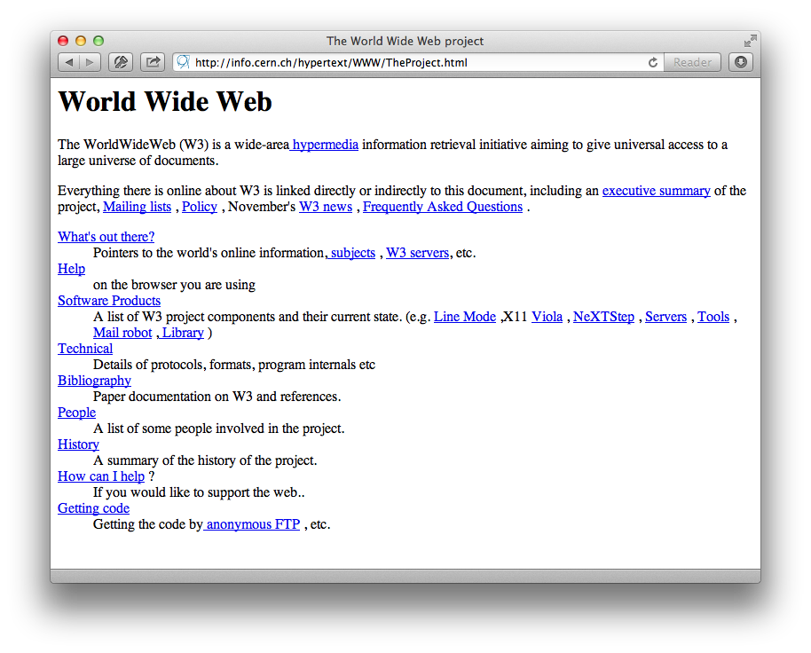
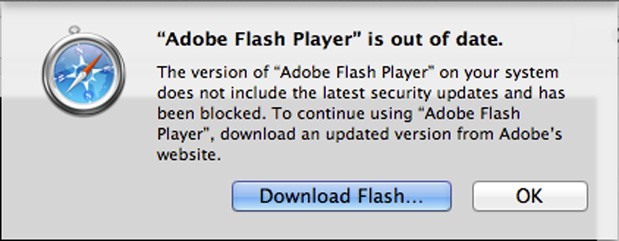
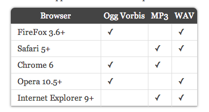
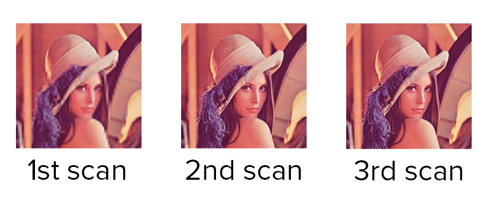
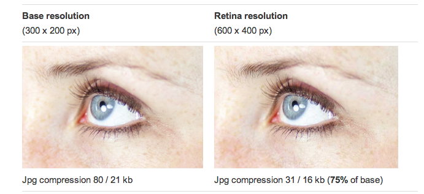

<media>
Media tags are dead, long live media tags!
Janson Hartliep - @_janson_
Moving...

Images!

Macromedia Flash
Javascript
CSS
Media
1st Class Citizens
- Native Tags
- DOM Manipulation
- Holistic experience
Native Tags

DOM Manipulation
Holistic experience
Audio
But remember! Autoplay is bad, mmmkay?
Best Case
- src — a valid URL
- autoplay - boolean
- loop — a boolean
- controls - a boolean
- preload - none | metadata | auto
Codecs
Ogg and MP3

https://www.scirra.com/blog/44/on-html5-audio-formats-aac-and-ogg
For now, polyfill: http://kolber.github.io/audiojs/
Style & Responsiveness
Limited CSS attached just to the controls.
Controls are styled just like form elements - painfully
No controls? Use Javacript to kick off audio's events.
Video
Best Case
- base attributes similar to audio
- poster - an image file shown while no video data is available
http://developers.whatwg.org/the-video-element.html#the-video-element
Codecs & Headaches
This is why we can't have nice things.
H264 and WebM cover all browsers (except Firefox 3.6 which needs Ogg Theora)
Just use http://www.mirovideoconverter.com/
Libraries
- mediaelementjs - replicates HTML5 API
- videojs - OSS HTML5 player
- vidly - hosts & converts & renders
Code
camendesign.com/code/video_for_everybody
no scripting, FLASH fallback in pure markup
Style & Responsiveness
- Native controls are by the user agent.
- Libraries decorate with other HTML & JS
Responsive?
video {
max-width: 100%;
height: auto;
}
or:fitvidsjs
Images
Why Care
Best Case


Accessible text
Spoiler! These are unintuitive, unimplemented, draft ideas.
Don't Use Assets
- Icon Fonts - symbolset
- SVG - IE9 brought support!. (Android still needs a polyfill.)
Change The Asset
WebP
"WebP is a new image format that provides lossless and lossy compression for images on the web."
By Google
Change the Asset
Progressive JPGs

Change the Asset
Super Compression

Style & Responsiveness
img {
max-width: 100%;
}
Q&A
Thanks! @_janson_